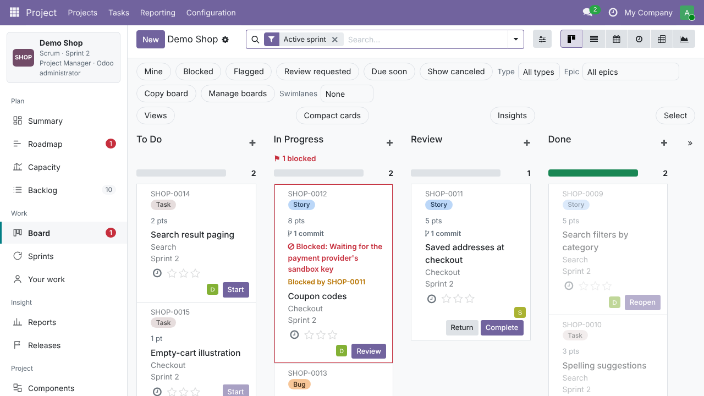

What you get
- Scrum and Kanban boards with drag and drop and configurable columns
- Backlog with sprint planning, estimates and bulk edit
- Sprints: start, complete, move unfinished work, sprint summary
- Issues with types, priorities, components, links and history
- Workflows with statuses and transition rules
- Releases and versions with release notes
- Basic roadmap, "Your work" page, quick and saved filters
- Basic reports: burndown and velocity
- Keyboard shortcuts, dark mode and phone-friendly layout
